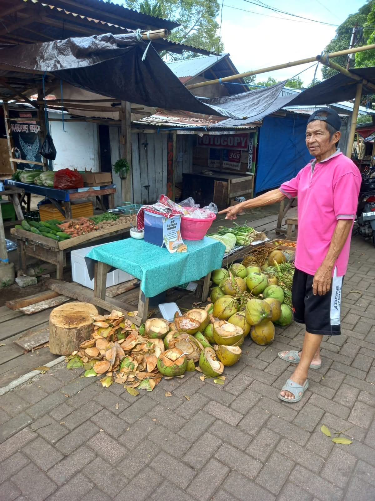

A LITTLE ABOUT US
Our Story
Mengenal lebih dekat Kios Hot Wok.

KIOS HOT WOK
Satu kedai, dua pilihan favorit.
Kios Hot Wok merupakan kedai di Airmadidi yang menyediakan nasi goreng dan mie goreng bercita rasa Chinese-style, serta produk kelapa muda segar.
Pelanggan dapat menikmati makanan langsung di kedai atau memilih takeaway.
OUR HOMEMADE TOUCH
Racikan yang dibuat sendiri
Kecap racikan Opa
Kecap yang digunakan untuk menu nasi goreng dan mie goreng dibuat dan diracik sendiri oleh Opa.
Gula batu buatan sendiri
Es kelapa muda disajikan dengan gula batu buatan sendiri sebagai bagian dari racikan minumannya.